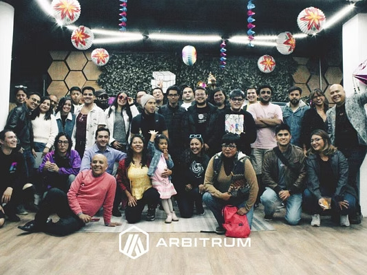
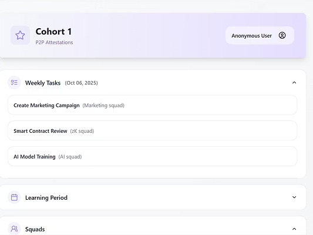
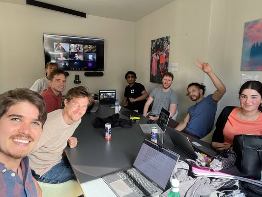
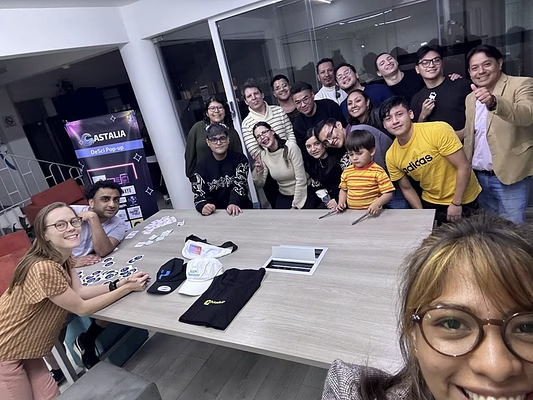
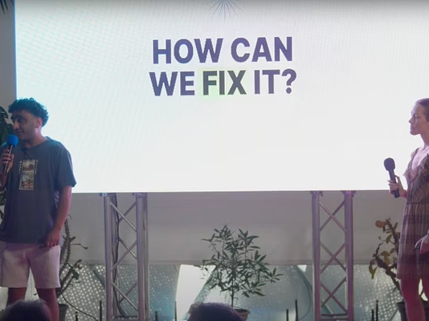
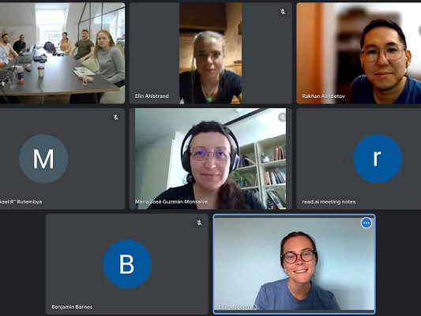

Foundations
8 weeks. Fellows from different disciplines teach each other their fields. Together they map the problem space and decide what to build.
MuseMatrix
A build-first fellowship where scientists and technical talent from different disciplines learn each other's fields and ship working products.
Bring a frontier question, a weird stack, or a lab-grade problem.






How it works
One cohort. One frontier question. Six months to build. Fellows learn each other's fields, then build together.
8 weeks. Fellows from different disciplines teach each other their fields. Together they map the problem space and decide what to build.
16 weeks. Prototype, test with real users, break it, rebuild it. No slides. Working code and working systems.
Live demo of the working product. Open repos, reproducible documentation, and a contributor roadmap so the project outlives the cohort.
Question-led cohorts
We don't run the same programme twice. Each cohort is designed around a frontier question that pulls in whichever disciplines are needed to answer it. Sometimes that's two fields. Sometimes it's five. The question decides who's in the room.
Current cohorts
Machine learning paired with biology, chemistry, physics, and other deep domain expertise to build useful science with teeth.
Interfaces, sensing, decoding, cognition, and brain-machine systems built with technical depth.
Formal reasoning, proof, verification, and mathematical discovery explored with AI systems.
Past cohorts have explored privacy-enhancing tech x biology, cryptography x hardware engineering, and more. Upcoming themes are announced each cycle.
Fellow builds
Every project here came out of a cohort. People walked in from different disciplines, spent six months learning and building together, and shipped something that didn't exist before.
VC-backed spinout building trusted hardware for secure autonomous biology. Born from Cohort 1 when cryptographers, hardware engineers, and scientists were put in the same room.
A DeSci network-state experiment seeded through a pop-up city in Mexico.
Verifiable skill acquisition and contribution trails.
The network
Graduates come back as mentors. They run their own cohort nodes. They start companies. They bring what they learned back to their careers and see everything differently. The fellowship changes what people think is possible for them.
Fellows get fast intros, lab access, pilot opportunities, and peer reviewers through a founding team with deep roots across DeSci, crypto, and frontier science. The curriculum evolves with every cohort. What Cohort 1 learned feeds Cohort 5. Partners span science, crypto, technical, university, and community lab ecosystems.
IRL nodes
London / Mexico City / San Francisco
Dubai, Tokyo, Zurich, and Lagos opening Q4 2025.
Ready to found something, or just want to explore while keeping your day job? Either way, you'll leave with a different trajectory.